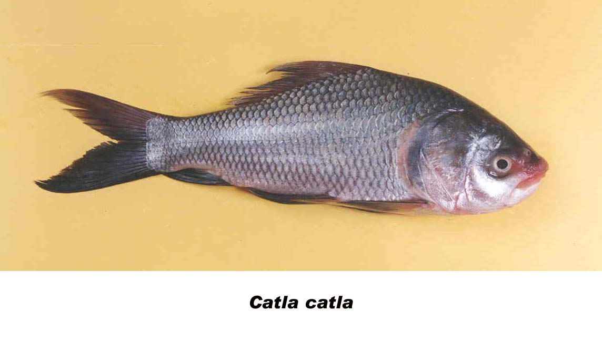

|
DIGITISED INVENTORY OF FRESHWATER FINFISHES AND SHELL FISHES OF INDIA |
Catla catla
Taxonomic
Details
----- Valid Name
----- Classification
----- Synonyms
----- Common Names
Other
Biological Details
----- Habit and
Habitat
----- Morphological
Features
----- Reproductive
Biology
---------- Breeding
season
---------- Breeding techinique
---------- Fishing methods
----- Biology
Stages of development:
Economic
Importance
----- Uses
----- Parts Used
Economic potenial to the country
----- ----- Fishery statistics
Miscellaneous Information
Literature
Name : Catla catla (Hamilton),1822

Family : Cyprinidae
Classification:
Phylum: Chordata Subphylum: Vertebrata
Class: Actinopterygii Subclass:Neopterygii
Division: Teleostei Subdivision: Euteleostei
SuperOrder: Ostariophysi Order:Cypriniformes
SubOrder: N.A. Family:Cyprinidae
Subfamily:Cyprininae
Synonyms: Catla buchanani Valenciennes,
1844
Catla catla (Hamilton),1822
Cyprinus abramioides Sykes,1839
Cyprinus catla Hamilton,1822
Gibelion catla (Hamilton),1822
Hypselobarbus abramioides (Sykes),1840
Leuciscus catla (Hamilton),1822
Common Names: Catla
HABIT & HABITAT: Warm Water
Distribution : Throughout India
MORPHOLOGICAL FEATURES: Body deep, its depth 2.5 to 3 times in standard length. Head enormously large. Mouth wide and upturned, with a prominent protruding lower jaw. Pectoral fins long, extend to pelvic fins. Scales conspicuously large; lateral line with 40 to 43 scales.
REPRODUCTIVE BIOLOGY:Catla is heterosexual. Sexes are difficult to distinguish externally except during breeding season when the mature females show prominent bulging abdomen with swollen fleshy vent and the mature males with oozing milt on slight pressure on the abdomen. The pectoral fins in mahtre male assume roughness, particularly on the dorsal side closer to the body, which are smooth and slippery in female during breeding season. Roughness with sandy texture of the scales (specially on the flanks and anterior dorsal side and nape) and with sandy tubers on the operculum appeared'during breeding season are the secondary sexual characters of male. The scales and the operculum remain smooth in female. The pectoral fins are stouter and longer in male than in female. It reaches 8th or 9th lateral line scale when extended backward and towards the dorsal side of the body in male, and 6th or 7th scale in female (Chaudhuri, 1959a). The pelvic fin in male is long and it extends to the anal (Day, 1878).
Breeding season:Catla spawns once (Chacko, 1946; Chacko and Kuriyan, 1950a; Menon et al., 1959; Ibrahim, 1961) or twice (Alikunhi et al., 1952b; Hora and Pillay, 1962; Natarajan and Jhingran, 1963) a year in Indian monsoon season prevailing at the different regions of the country. The spawning season lasts from May to August in north eastern India and Bangladesh during the south-west monsoon period, and from June to September in north western India and Pakistan. Catla is reported to have bred twice in south Indian rivers during south-west and north-west monsoons, and as such its spawning season in south India lasts from end of May to November. Catla do not spawn naturally in confined waters, but breeding occurs in rivers, reservoirs and in waters providing fluviatile conditions. They breed rather in deeper water for large-sized deep body.
Breeding techinique:Catla breeds in confined waters by fish pituitary hormone injection, and successful spawning was first achieved in May, 1959 at Joysagar, Assam, India (Chaudhuri, In Jhingran, 1983). Since then induced breeding of this species has been carried on in different regions of the country with varying degree of success.
Fishing methods:Gillnet, driftnet, purse or clapnet, dragnet, fixed net, castnet, scoop or dip or handnet, fish traps, hooks and lines, and fish spear are normally employed for fishing at different depths of various types of water sheets.
BIOLOGY:Among carps catla is having comparatively less bones.
It has soft flesh while young, but becomes coarse in texture beyond 8.0
cm. It is the fastest growing fish among the cultivable Indian carps, and
domesticated by nature. It generally remains in deep water. It has herbivorous
feeding habit and is suitably compatible to 6-species-composite fish culture of
Indian arid Chinese major carps under commercial practiced in India. Its
fecundity is fairly high. It responds well in inducement of breeding in suitable
confinement. Its transplantation from lotic to lentic environment does not
effect to growth and gonadal development. It is very strong and active and has
fair resistance to pollution and pesticides in comparison to other carps.
Back to Top
Stages of development:The embryonic development of the fertilised eggs of catla (Mookherjee, 1945a) is described as follows: Time after fertilization Development features 0 h 35-40 min Segmentation commences, regular. 1 h 29 min 8-celled stage 1 h 45 min 16-celled stage 2 h 39 min 32-celled stage 6 h 30 min Completion of yolk invasion and formation of blastopore. 8 h 50 min Appearance of embryonic rudiment. 11 h 05 min Appearance of optic rudiment. 12 h 45 min Appearance of median fin-fold. 14 h 30 min Appearance of heart and otocyst rudiments. 15 h 00 min Begining of pulsation of heart. 16 h 00 min Begining of gill rudiments.
16 h 10 min Begining of pectoral fin buds. 16 h 40 min Period of incubation. The period of incubation ofcatla egg is about 14-24 hours in the 23-33°C water temperature. Larva comes out of egg shell and rests at the bottom for a while. Larval development has been described by many authors (Mookerjee et al.,1944d ; Mookerjee, 1945a; Devasundaram, 1952a; Chakrabarty and Murty, 1972; Kamal, 1964; Chondar, 1980). According to Chacko and Kuriyan (1948b, 1950a) catla attains adult characteristics in about 42 days after hatching.
Larval development
Newly hatched larva (Fig. 4a). Total length, ova 4.68 rnm (Chakrabarty and Murty, 1972),4.4-5.3 rnm (Chondar, 1980). Body laterally compressed, transparent. Conspicuous eyes, otocyst, rudiments of gill slits, pectoral fin bud present.
Yolk-sac conspicuous and oval with a posterior elongation. The anterior bulbous part of the yolk-sac usually longer or as long as the posterior tubular part. The curvature of the ventral profile of the bulbous part deep at the junction of the tubular part, fonning a sort of constriction, which later is present in most of the larvae. 26 preanal and 12 postanal myotomes in most of the hatchlings. Embryonic fin-fold continuous to the same level from the dorsal to the ventral aspects of the profiles. Hatchlings are active, only occassionally swim up and immediately drop to settle.
Larva, I-day-old (Fig.4b). Total length, ova 5.80mm (Chakrabarty and murty, 1972),4.9 -6.0 mm(Chondar, 1980).
Chromatophores not yet appeared on the body. Eyes transparent with a dark spot at its ventro-median region. Yolk-mass reducing and narrowing. The anterior profile of the yolk-mass convex, and the tublar part does not end in a point sharply. Pectoral fin-bud flap-like and functional. Distinct sub-tenninal buccul invagination ventral to eye. Lower jaw not fully differentiated. 26 preanal and 12 postanal myotomes fonned in all specimens. Embryonic fin-fold continuous. Larvae somewhat active with lateral movement at time.
Larva, 2-day-old (Fig.4d). Total length, ova 6.48mm (Chakrabarty and Murty, 1972),5.8-7.0 mm (Chondar, 1980). Chromatophores appearing on the dorsal aspect of the head. Eyes with pigmentaion. Yolk-mass considerably reduced, the bulbous part further narrows to a tube. Mouth opening being at tenninal in position. Lower jaw differentiated, lips starts thickening. Eyes fully pigmented, dark. Gill filaments (10 nos.) rudiment, visible beneath the operculum. Air bladder distinct, oblong and dorsal to foregut. Intestine short and straight, average length being 3.0 mm (Kamal, 1964). Demarcation started at the dorsal aspect of the fin-fold in larger specimens. Larvae actively swim up with horizontal jerky movement. According to Chacko and Kuriyan (1948b) the yolk-sac gets completely absorbed at the end of the second day.
Larva, 3-day-old (Fig. 4e). Total length, ova 7.3 mm (Chakrabarty and Murty, 1972),6.6-7.5 mm (Chondar, 1980). The tube-like yolk-mass disappearing. Lower jaw more developed and prominent, the mouth becoming upturned. Liver appeared. Gill filaments still 10 in number. The straight intestine become slightly longer, average length being 3.4 mm (Kamal, 1964). According to Chacko and Kuriyan (1948) the alimentary canal is completed on the third day. Reddish glow appeared at the opercular region. A few chromatophores scatterd on the base of the caudal peduncle. Dorsal fm-bud demarcated. Anal fin demarcating in the larger specimens. Dark somewhat triangular spot in caudal peduncle (Chakrabarty and Murty, 1972).
Postlarva, 4-day-old (Fig.4t). Total length, 7.56 mm (Chakrabarty and Murty, 1972),7.2-8.6 mm (Chondar, 1980). Yolk disappeared. Dorsal fin rudiment. Lower jaw further developed, mouth becomes more upturned. Gill filaments increased to 14 in many specimens. Folding appearing in the intestine (Kamal, 1964). Anal fin demarcated. Rays appearing in the dorsal fin. Caudal with rays. Semicircular mark, formed of black chromatophores, seen on ventral side of caudal towards end of notochord. The arc of semicircle not well defined and the straight line of the semicircle mildly concave (Chakrabarty and Murty, 1972).
Postlarva, 5-day-old (Fig.4g). Total length, av. 9.0 mm (Chakrabarty and Murty, 1972), 8.5-10.0mm(Chondar, 1980). Gape of mouth, 0.7 mm. Diameter of eye, 1.0 rom. Head conspicuous, snout flat and pointed. Dorsal and caudal fin differentiated and spotted. A few rays appearing in the anterior part of the dorsal fin. Caudal fin demarcated, with 15-18 rays branching. Intestine elongated, average length being 3.6 rom. Folding of the intestine become more. Gills reddish, 14 gill filaments and 9 gill rakers (Kamal, 1964). A faint blotch on the caudal peduncle.
Postlarva, 6-day-old (Fig.4h). Total length, ova 11.0 mm (Chakrabarty and Murty, 1972),9.9-12.0 mm (Chondar, 1980). Dorsal fin-rays branching distally. Anal fin-bud not yet fully appeared. Lower jaw becoming prominent with an upward bend. Moderately large head. Dorsal profile convex from snout end to dorsal fin. Intestine further increase in length, average being about 5.0 rom. Coiling of the intestine commences. A few chromatophores scattered forming two cresent shaped areas at the base of the caudal fin. Periphery of the dorsal fin pigmented and shaded black.
Uses: Catla
catla is one of the renowned and the fastest growing of the Indian major carps.
It is considered excellent eating, especially when the fishes are of moderate
size. The head is very fatty and those habituated to fish- head preparations
will appreciate its flavour. Larger specimens, however, acquire a course texture
associated with a definite decline in taste and flavour.In the Vanivilas Sagar,
Catla supports a very important fishery. Catla is non-predatory and its feeding
is restricted to the surface and mid- waters. These features render the
simultaneous introduction of Catla with bottom and column feeding cultivable
fishes like Rohu, Mrigal, ere advantageous. Catla is a hardy fish which, when
young, stands transportation well over long distances involving considerable
time. Catla is caught practically all the year round. It is good fish for tank
angling. It fights well. A hook baited with a green weed, gets the fish.
Artificial propagation by hypophysation very successful in India. Under
composite fish culture production of Indian and exotic carps (including Catla)
of more than 10t/ha/annum has been achieved in experimental farms. Being a
commercially important fish, it is introduced into almost all parts of India and
is reared in the tanks and rivers. Economic
potential to the country
Total Production (in percentage) of Catla in India
Year
Production
( in %)
1972-73
0 1973-74
0 6 16.3 7.3 1978-79
2.8
1980-81 8 2.5 5.9 8.3 10.7 5 3 2.2 7.5 12 7.4 6.2 14.5 13.4 7.2 State wise Landing of Major Carps During 1991-94 (in
tonnes)
Year
1991
1992
1993
1994
State
Reservoir-wise landing of Catla-catla - - In India Catla was originally confined to
the plains north of Krishna, but during the last three decades it has been
introduced to practically all river systems and many of the tanks and
reservoirs. In South India it took 20 years of continuous stocking for the fish
to establish itself in the lower Cauvery, including the Mettur Reservoir. 1.Talwar, P.K. and A.G. Jhingran., 1991. Inland
Fishes Of India & Adjacent Countries,
vol. 1 & 2. Oxford & B H Publishing Co.Ltd. Pg.164
2.Jhingaran, V.J. 1991. Fish And Fisheries
Of India. Hindustan Publishing Corporation Delhi,
(India).
3.CICFRI , Bul.No.66,April 1992.
Parts Used:
1974-75
1975-76
1976-77
1984-85
1986-87
1987-88
1988-89
1990-91
1991-92
1992-93
1993-94
1994-95
1995-96
1996-97
1997-98
1998-99
2000-01
Landing of Major Carps in tonnes
Andhra Pradesh
52624
52624
-
-
Arunachal Pradesh
276
276
-
-
Assam
124850
124850
-
-
Bihar
94092
93840
-
-
Gujrat
8724
11142
15440
16180
Haryana
13150
13150
7878
9200
Himanchal Pradesh
301
254
259
203
Karnataka
64343
65704
74632
70288
Kerala
1530
1530
2002
1715
Madhya Pradesh
40541
37892
-
-
Maharashtra
64849
66021
-
-
Manipur
2850
2850
-
-
Meghalaya
1155
1633
-
-
Mizoram
1850
1980
1800
1500
Nagaland
635
630
850
1100
Orrisa
36502
41470
71038
78286
Punjab
4800
5700
-
-
Rajasthan
4015
5807
10590
10693
Tamil Nadu
16150
18050
20035
20410
Tripura
15692
16929
12032
18341
Uttar Pradesh
113307
121433
-
-
West Bangal
236300
121433
-
-
Andaman Nikobar
17
28
-
-
Chandigarh
20
20
-
-
Dadra & NagarHavali
12
12
-
-
Delhi
1800
1900
-
-
Pondicherry
495
594
-
-
Year
1971-72
1972-73
1973-74
1974-75
1975-76
1976-77
1977-78
1978-79
1979-80
1980-81
1981-82
Reservoir
Bavanisagar(t)
8.753
12.099
7.793
5.162
6.589
19.902
8.111
1.999
3.058
2.821
-
Nagarjunsagar(kg.)
6530
6610
1408
1938
2160
2200
3038
2631
1696
-
Ukai(t)
-
-
-
-
39.73
41.98
50.21
79.15
30.36
90.5
61.5
Year
1973
1974
1975
1976
1977
1978
1979
1980
1981
1982
1983
1984
1985
Reservoir
Govindsagar(kg.)
41162
139806
151224
218907
128361
34090
85760
55502
20733
23873
46539
6270
Hirakud(t)
-
-
-
-
-
91.8
62.5
-
-
-
-
-
-